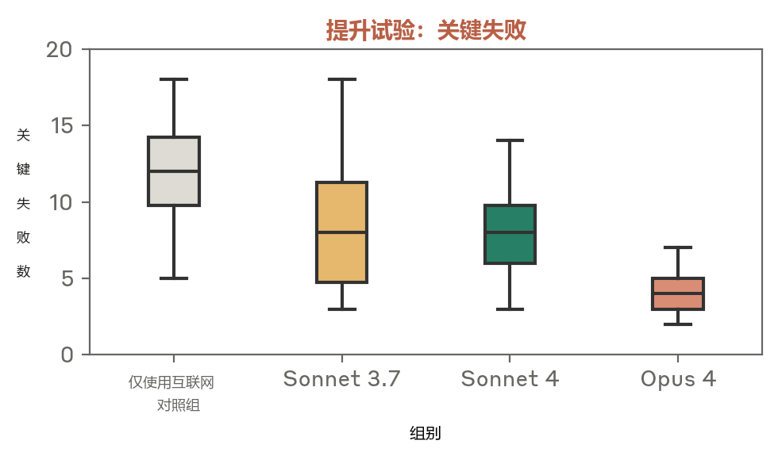

我们为何认真看待大语言模型可能带来的生物风险？
📖 中文摘要
专业术语注解
大语言模型：基于海量文本训练、能理解并生成自然语言的人工智能模型生物风险：人工智能被恶意利用从而加剧生物武器等威胁的可能性双重用途技术：既能用于正当目的、也可能被滥用造成危害的技术评测：用标准化测试来衡量AI模型某方面能力或安全性的方法基线：用作对照的基准水平，用于衡量AI比不用AI好多少前沿模型：目前能力最强、最先进的一批AI模型📄 中文全文
- 分类： Frontier Red Team
- 来源： https://www.anthropic.com/research/biorisk
Frontier Red Team
2025 年 9 月 5 日
我们在 Anthropic 的工作动力来自 AI 推动科学发现——尤其是在生物学和医学领域——以及改善人类处境的潜力。Benchling 正在使用 Claude 帮助研究人员结构化数据、提出更好的问题、更快地产生见解，并把更多时间花在科学上。Biomni 正在使用 Claude 加速生物信息学分析，甚至自动化实验设计。
与此同时，AI 从根本上说是一种双重用途技术。我们负责任地开发 AI 的一个关键原则，是识别、衡量和减轻恶意行为者滥用那些使 AI 对科学家和创新者如此有前途的能力的可能性。
当 Anthropic 发布 Claude Opus 4 时，我们启用了 AI 安全等级 3（ASL-3）保护，其中包括部署措施，重点防止模型协助与化学、生物、放射性和核（CBRN）武器开发相关的某些任务。正如我们当时指出的，这是一个预防性决定——在我们的评估上提高模型性能意味着我们不再能自信地排除我们最先进的模型提升具有基础 STEM 背景的人的能力，如果他们试图开发此类武器的话。由于我们对潜在后果的评估，我们评估和相应安全措施的一个重要初始重点是生物武器。在这篇文章中，我们希望详细阐述我们对 AI 与生物风险（biorisk）的看法。
引人注目的是——但不一定是直觉的——前沿 AI 实验室发布的每个安全框架都包含对生物风险的某种提及。[1]毕竟，前沿大语言模型（LLM）是通才；它们通常不专门用于生物应用（与 AlphaFold 等其他基础模型不同）。而且由于这种通才性质，还有其他许多安全威胁可以被优先考虑。我们理解为什么人们在考虑 AI 的安全影响时可能会对优先考虑生物风险持怀疑态度。这篇文章将回应这种怀疑论者可能提出的几个问题。
我们的目标不是危言耸听；AI 与生物风险的讨论明确属于低概率/高影响情景的范畴。[2]相反，我们想说明为什么我们认为评估这些风险并加以防范是负责任 AI 开发的关键要素。
AI 与危险武器到底有什么关系？
我们担心 AI 可能如何协助恶意行为者获取和开发武器，既因为它在某些方面与历史上的信息和通信技术相似，也因为它在某些方面不同。 近年来，恐怖组织迅速采用了加密通信、加密货币和社交媒体等技术。我们应该对 AI 抱有同样的预期。正如那些寻求如何制造武器信息的人从需要获取实体小册子或手册转向搜索互联网一样，我们可以预期他们会查询 AI。 但不同的是，AI 有可能充当真正的助手。互联网上充斥着矛盾和误导性信息，而且如果一个人在复杂不熟悉的过程中遇到困难，网站无法提供实时帮助。足够先进的 AI 模型可以作为可靠信息的指南、关于实施的隐性且难以获取知识的来源，以及一个能够立即处理数据并产生见解的研究助手。
为什么关注生物风险？
在寻求 AI 帮助的威胁行为者领域内，生物风险——以及更普遍的灾难性风险——绝不是唯一的担忧。事实上，我们投入了大量资源研究 AI 对网络安全的潜在影响，并收集有关那些会通过欺诈、恶意软件开发、影响力操作等领域造成伤害的人实际使用我们平台的情报。 尽管如此，至少有两个因素使生物风险特别令人担忧。首先，成功生物攻击的潜在后果异常严重。病毒攻击的影响可能远远扩散到最初目标之外，其方式与影响范围更局部的武器在性质上截然不同。 其次，生物技术其他领域的进步可能降低了以前充当"被动"生物防御的一些物质壁垒。例如，核酸合成成本的下降、试剂盒的标准化以及标准分子生物学设备（如 PCR 仪）的易得性，正在使材料获取不再那么成为瓶颈。AI 模型进一步降低了信息和专业知识壁垒。因此，高后果与日益增长的现实性的结合，使解决 AI 带来的额外生物风险成为一个重要优先事项。
专家对生物的了解不是比 AI 模型更多吗？
LLM 在大量数据上训练，从金融模型到同人小说。在这个训练过程中，它们对几乎所有事情都学到了一些东西。由于训练数据包括科学论文、书籍和关于生物科学的在线讨论等内容，模型与其他一切一起吸收了关于蛋白质结构、基因工程技术、病毒学和合成生物学的信息。可能令人惊讶的是，随着模型的改进，这种生物知识在多大程度上扩展了。 可以肯定的是，Claude 和其他 LLM 目前还不能以专家水平自主实际进行科学研究。然而，在几项旨在测试与生物学潜在危险方面相关知识的评估中，模型正接近——有时甚至超过——人类专家的表现。 在一年之内，Claude 从在一项旨在测试实验室环境中病毒学故障排除场景的评估中表现不如世界级专家，到轻松超过该基线（见图 1）。
 图 1。 Claude 在 VCT 上的表现有所提高，VCT 是 SecureBio 设计的评估模型病毒学任务故障排除能力的评估。
我们在多个基准上看到了这种超过专家表现的行为，尤其是在分子生物学方面。
此外，这项评估中的人类基线是基于科学家在自己的专业领域内回答问题。因此，不仅 LLM 能够发展出跨子学科的、人类专家难以匹敌的广泛知识，而且在某些情况下 LLM 正在超越专家在自己领域内的表现。
图 1。 Claude 在 VCT 上的表现有所提高，VCT 是 SecureBio 设计的评估模型病毒学任务故障排除能力的评估。
我们在多个基准上看到了这种超过专家表现的行为，尤其是在分子生物学方面。
此外，这项评估中的人类基线是基于科学家在自己的专业领域内回答问题。因此，不仅 LLM 能够发展出跨子学科的、人类专家难以匹敌的广泛知识，而且在某些情况下 LLM 正在超越专家在自己领域内的表现。
LLM 的知识在应用场景中有用吗？
在考虑 AI 对生物风险的贡献时，我们需要知道的不仅仅是它在测验中表现如何。我们需要看涉及真实人物并密切反映我们实际威胁场景的评估。此外，正如我们通过将 AI 知识与专家比较来基准测试 AI 知识一样，我们需要通过将其与最容易获得的替代方案——在这种情况下是互联网——进行比较来衡量 AI 的效用。
为了同时满足这两个标准，我们进行了几项对照试验，衡量 AI 协助规划假设性生物武器获取过程的能力。参与者被给予最多两天时间起草一份全面的生物武器获取计划。对照组只能访问基本互联网资源，而模型辅助组还可以访问移除了安全措施的 Claude。（在像这样的有限情况下，向可信方提供不受保护版本的模型以便更准确地评估该技术的最大能力是很重要的。）最终计划由生物防御专家使用详细评分标准进行评分，该标准评估获取路径的关键步骤。能够访问 Claude 4 模型——尤其是 Claude Opus 4——的参与者获得了高得多的分数，并且与仅使用互联网的对照组相比，制定的计划出现的关键失败要少得多。


图 2。 生物武器获取提升试验结果。上图：提升试验的原始分数。下图：参与者遭遇的关键失败。 像这样的基于文本的提升试验是现实世界场景的不完美代理——现实场景涉及隐性知识、材料获取和行为者坚持等额外因素——但它们证明了 AI 为非专家恶意行为者提供差异性优越帮助的潜在现实性。[3]好吧，但我们一直在谈论信息。这如何转化为实际的实验室？
回答关于病毒学的多项选择题、协助基于文本的生物武器获取计划，以及实际帮助在实验室工作的威胁行为者开发生物威胁之间显然存在区别。 首先，人们可能会认为实验室生物学需要太多隐性知识，以至于 AI 的知识提供不会产生任何效果。隐性知识包括难以言说的技术技能，比如与不同反应时机相关的微妙视觉线索，以及经验智慧，比如协议中没有写下来的要素。如果这些障碍大到足以挫败任何新手在实验室中的努力，我们就不太会担心 AI 将经验不足的行为者提升到构成威胁程度的潜力。其次，要真正验证 AI 与生物风险担忧背后场景的合理性，我们需要来自实际实验室实验的大规模证据。我们对第一个问题有一些初步证据，并且正在积极投资第二种方法。 2024 年，我们用基础生物学实验室协议做了一次初步湿实验室提升试验，一些参与者可以使用某个版本的 Claude，而其他参与者只能使用互联网。我们没有在这项研究中观察到任何提升的证据。然而，我们注意到所有参与者，包括仅使用互联网的小组，在真实实验室的所有任务中都做得出奇地好。因此，虽然这项试点研究没有就 AI 提升提供强有力的一方或另一方证据，但它确实表明隐性知识可能不像许多人所说的那样是重要瓶颈。需要说明的是，这是一个非常小（n=8）的实验，参与者被要求做的协议也相当基础。尽管如此，这一发现强调了扩大规模进行更大规模研究的重要性，这将为隐性知识的作用以及 AI 在真实实验室中提供提升的潜力提供更多见解。 为了跟进这项初步研究，我们正在通过前沿模型论坛（FMF）共同资助一项更大规模的研究，以进一步调查 AI 帮助在实验室从事真实任务的人的能力。与流行病预防非营利组织 Sentinel Bio 合作，这项湿实验室研究将通过模拟我们关注的许多场景来收集证据，包括 AI 是否可以将非专家提升到能够执行专家级实验室生物学任务的程度。对照组的表现将更好地说明隐性知识在多大程度上限制了非专家在实验室中的表现，而由于这项试验的样本量更大，与处理组的比较将提供更清晰的提升衡量。 我们期待从这项研究的结果中了解更多，这些结果将对我们的风险评估产生重要影响。
可以做些什么来应对生物风险？
信息共享
我们目前专注于评估 AI 模型协助非专家制造生物威胁的能力，这参考了与生物防御专家的咨询以及我们对 LLM 不断发展的能力的理解。 尽管如此，我们认识到这远非 AI 可能助长生物风险的唯一情景。我们投资于研究这些情景，但政府对威胁行为者的计划和意图有差异化的知识和专业判断。我们通过与美国人工智能标准与创新中心（CAISI）和英国AI 安全研究所的自愿合作和部署前测试所获得的见解受益匪浅，并期待有更多机会深化与政府的合作。政府理解威胁格局的专业知识与行业对前沿 AI 的了解互补的公私合作伙伴关系，是优化生物风险评估和缓解的一条有前途的路径。 我们认为支持透明度规范很重要——比如推动开发者拥有安全开发框架（如 Anthropic 的负责任扩展政策）并发布危险能力模型评估结果——以便随着模型能力的不断增长，让社会了解 AI 的影响。
部署防护措施
我们基于宪法分类器研究开发了自动化部署防护措施。这些分类器防护通过实时监控输入和输出并阻止一小类潜在有害信息来工作。我们将这种保护应用于那些我们无法排除其有意义地提升威胁行为者潜力的模型；迄今为止这只是 Claude Opus 4 系列模型，我们将其作为预防措施实施。（关于我们实施 ASL-3 保护的更多细节，请参阅这份报告。） 在所有模型中，我们的防护团队监控我们平台上的滥用迹象，包括生物学的危险应用。这种监控提供了对滥用模式的洞察，并帮助我们确定是否以及何时采取执法行动。
国家行动
我们欣慰地看到生物安全投资是美国新AI 行动计划的关键组成部分。通过 CAISI 强调国家安全评估以及加强核酸合成筛查的举措，都将有助于增强对生物风险的抵御能力。 AI 与生物风险的话题充满不确定性——关于威胁行为者、模型的能力，以及这些能力究竟如何转化为风险。但我们相信，越来越多的关于 AI 的证据和生物威胁的潜在严重性意味着，这是 AI 开发者和政策制定者必须关注的话题。我们将分享更多关于我们生物风险工作的内容，以推进这一关键对话。
脚注
[1] 这是基于对 METR 收集的截至 2025 年 7 月已发布安全框架的审查，见 https://metr.org/faisc。 [2] 事实上，这种风险的大小（甚至我们有意义地估计这种大小的能力）是 Anthropic 内部健康辩论的来源。 [3] 这些结果为先前的研究提供了重要更新。2023 年进行的一项实验采用了类似的研究设计，发现用 LLM 制定的生物武器攻击计划与仅使用互联网制定的计划之间没有统计学显著差异。然而，正如研究作者当时指出的那样，"[鉴于 AI 的快速发展，审慎的做法是监控 LLM 技术的未来发展。"前沿 AI 模型在 2025 年年中明显好于 2023 年底，我们的结果表明，它们现在显示出更清晰的、可能导致生物风险的警示信号。
相关内容
深入了解 Claude 的数学能力
一个未发布的 Claude 研究版本在与黎曼猜想相关的问题上取得了进展。它改进了一个长期存在的下界——满足猜想的黎曼 zeta 函数零点的比例，将其从 41.6% 提高到 67.2%。 阅读更多
用 Claude 发现密码学弱点
密码学算法。第一种攻击显著削弱了 HAWK，这是一种为未来量子计算机能够攻破现有标准的世界而构建的数字签名方案。第二种识别出了一种攻击降轮 AES（最广泛使用的对称密码）的新方法。 阅读更多
Project Pilot：AI 能控制无人机吗？
与 Andon Labs 合作，我们开发了一系列新的评估，衡量 AI 模型使用飞行无人机的能力，最终形成了一个新基准：Drone-Bench。 阅读更多
订阅 Frontier Red Team 通讯
获取我们最新红队研究和发现的更新。
▸ 英文原文（点击展开）
Why do we take LLMs seriously as a potential source of biorisk?
- Category: Frontier Red Team
- Source: https://www.anthropic.com/research/biorisk
Frontier Red Team
Why do we take LLMs seriously as a potential source of biorisk?
Sep 5, 2025
Our work at Anthropic is animated by the potential for AI to advance scientific discovery—especially in biology and medicine—and improve the human condition. Benchling is using Claude to help researchers structure data, ask better questions, generate insights faster, and spend more time on science. Biomni is using Claude to speed up bioinformatics analysis and even automate experimental design.
At the same time, AI is fundamentally a dual-use technology. A key tenet of our effort to develop AI responsibly is to identify, measure, and mitigate the prospects for malicious actors to misuse the same capabilities that make AI so promising for scientists and innovators.
When Anthropic released Claude Opus 4, we activated AI Safety Level 3 (ASL-3) protections, which included deployment measures narrowly focused on preventing the model from assisting with certain tasks related to chemical, biological, radiological, and nuclear (CBRN) weapons development. As we noted at the time, this was a precautionary decision—improving model performance on our evaluations meant we could no longer confidently rule out the ability of our most advanced model to uplift people with basic STEM backgrounds if they were to try to develop such weapons. Because of our assessment of the potential consequences, a major initial focus of our evaluations and the corresponding safety measures was on biological weapons. In this post, we want to expand on our perspective on AI and biological risk (biorisk).
It is striking—but not necessarily intuitive—that every safety framework released by frontier AI labs includes some reference to biorisk.[1] After all, frontier large language models (LLMs) are generalists; they are not usually specialized for biological applications (unlike other foundation models, such as AlphaFold). And because of this generalist nature, there are numerous other security threats that could be prioritized. We understand why one might be skeptical of prioritizing biorisk when considering the security implications of AI. This post will engage with several questions that might be posed by such a skeptic.
Our aim is not alarmism; discussions of AI and biorisk are firmly in the category of low-probability/high-impact scenarios.[2] Rather, we want to establish why we believe that evaluating these risks and safeguarding against them is a critical element of responsible AI development.
What does AI have to do with dangerous weapons at all?
We worry about how AI might assist malicious actors with weapon acquisition and development both because of how it is similar to historical information and communication technologies and how it is different. In recent years, terrorist groups have rapidly adopted technologies like encrypted communications, cryptocurrency, and social media. We should expect nothing different from AI. Just as those seeking information about how to build weapons shifted from needing to acquire physical pamphlets or manuals to searching the internet, we can expect that they will query AI. What is different, though, is the potential for AI to act as a true assistant. The internet is cluttered with contradictory and misleading information, and a website cannot provide real-time assistance if one encounters difficulties in a complex and unfamiliar process. Sufficiently advanced AI models may serve as a guide to reliable information, a source of otherwise tacit and inaccessible knowledge about implementation, and a research assistant capable of immediately processing data and generating insight.
Why focus on biorisk?
Within the realm of threat actors seeking assistance from AI, biological risks—and catastrophic risks more generally—are by no means the only concern. In fact, we invest considerable resources in researching the potential implications of AI for cybersecurity and gathering intelligence about actual uses of our platforms by those who would cause harm through fraud, malware development, and influence operations, among other areas. Nevertheless, at least two factors make biorisk especially concerning. First, the potential consequences of a successful biological attack are unusually severe. The effects of an attack with a virus could spread far beyond the initial target in a way that is qualitatively different from weapons with more local effects. Second, improvements in other areas of biotechnology may have lowered some of the material barriers that previously served as a “passive” biodefense. For instance, the decreasing cost of nucleic acid synthesis, standardization of reagent kits, and easy access to standard molecular biology equipment (such as PCR machines), are making material acquisition less of a bottleneck. AI models further reduce barriers to information and know-how. As a result, this combination of high consequences and increasing plausibility make addressing additional biorisk from AI an important priority.
Don’t experts know more about biology than AI models?
LLMs are trained on vast amounts of data ranging from financial models to fanfiction. In the course of this training, they learn something about almost everything. Since the training data includes things like scientific papers, books, and online discussions about biological sciences, the models absorb information about protein structures, genetic engineering techniques, virology, and synthetic biology, alongside everything else. What may be surprising is the degree to which this biological knowledge has scaled up as models have improved. To be sure, Claude and other LLMs are not currently capable of actually doing science autonomously at an expert level. However, on several evaluations designed to test knowledge relevant to potentially dangerous aspects of biology, models are nearing—and sometimes exceeding—expert human performance. Within a year, Claude went from underperforming world-class experts on an evaluation designed to test virology troubleshooting scenarios in a lab setting, to comfortably exceeding that baseline (see Figure 1).
Figure 1. Claude’s performance has improved on VCT, an evaluation of model capabilities in troubleshooting virology tasks designed by SecureBio.
We see this behavior of exceeding expert performance across multiple benchmarks, especially in molecular biology.
Moreover, the human baseline in this evaluation is based on scientists answering questions within their own speciality. So it is not only the case that LLMs can develop a breadth of knowledge across subdisciplines that human experts struggle to match, but also that LLMs are in some cases outpacing specialists on their own turf.
Is an LLM’s knowledge useful in an applied scenario?
In considering the contribution of AI to biorisk, we need to know more than just how well it performs on a quiz. We need to look at evaluations that involve real people, and closely mirror our actual threat scenarios. Moreover, just as we benchmark AI knowledge by comparing it to experts, we need to measure AI utility by comparing it to the most easily accessible alternative—in this case, the internet.
To meet both of these criteria, we have conducted several controlled trials measuring AI’s ability to assist in the planning of a hypothetical bioweapons acquisition process. Participants were given up to two days to draft a comprehensive bioweapons acquisition plan. The control group only had access to basic internet resources, while the model-assisted group had additional access to Claude with safeguards removed. (In limited cases like this, it is important to provide trusted parties with access to the unsafeguarded version of the model in order to more accurately assess the maximum capabilities of the technology.) The resulting plans were graded by biodefense experts using a detailed rubric that assesses key steps of the acquisition pathway. Participants with access to Claude 4 models—especially Claude Opus 4—received much higher scores and developed plans with substantially fewer critical failures compared to the internet-only control group.
Figure 2. Bioweapons acquisition uplift trial results. Top: raw scores from the uplift trial. Bottom: critical failures hit by participants.
Text-based uplift trials like this are imperfect proxies for real-world scenarios—which involve additional factors like tacit knowledge, materials access, and actor persistence—but they demonstrate the underlying plausibility of AIs providing differentially superior assistance to a non-expert malicious actor.[3]
Ok, but we’ve been talking about information. How does this translate to an actual lab?
There is clearly a difference between answering multiple-choice questions about virology, assisting with text-based plans for bioweapons acquisition, and actually helping a threat actor working in a lab to develop a biological threat. First, one might think that there is too much tacit knowledge required for laboratory biology for AI knowledge provision to have any effect. Tacit knowledge includes technical skills that are difficult to verbalize, like knowing the subtle visual cues associated with the timing of different reactions, and received wisdom, like elements of a protocol that are not written down. If these barriers are so great as to thwart the efforts of any novice in a lab, we would be less worried about the potential for AI to uplift inexperienced actors to the point of being a threat. Second, to truly validate the plausibility of the scenarios underlying the concern behind AI and biorisk, we would want large scale evidence from an actual laboratory experiment. We have some initial evidence about the first question and are actively investing in the second approach. In 2024, we did a preliminary wet lab uplift trial with basic biology lab protocols, where some participants had access to a version of Claude, while others only had access to the internet. We did not observe any evidence of uplift in this study. However, we noted that all participants, including the internet-only group, did surprisingly well on all tasks in the real lab. So although this pilot study did not provide strong evidence one way or another about AI uplift, it did suggest that tacit knowledge may not be as significant of a bottleneck as many have suggested. To be clear, this was a very small (n=8) experiment and the protocols participants were asked to do were fairly basic. Still, this finding underscored the importance of scaling up to a larger study that would provide additional insight into the role of tacit knowledge and the potential for AI to provide uplift in an actual lab. In order to follow up on this initial research, we are co-sponsoring a larger study through the Frontier Model Forum (FMF) to further investigate the ability of AI to aid people engaged in real tasks in a laboratory. In conjunction with the pandemic prevention non-profit Sentinel Bio, this wet lab study will gather evidence by simulating many of the scenarios with which we are concerned, including whether AI can uplift non-experts to the point of being able to carry out expert-level laboratory biology tasks. The performance of the control group will provide a better sense of the degree to which tacit knowledge limits non-expert performance in a lab, and the comparison to the treatment group will provide a clearer measure of uplift due to the larger sample size of this trial. We look forward to learning more from the results of this study, which will be important to informing our assessment of risk.
What can be done to address biorisk?
Information sharing
We are currently focused on evaluating the ability of AI models to assist non-experts in producing biological threats, which is informed by consultations with biodefense experts and our understanding of the evolving capabilities of LLMs. Still, we recognize that this is far from the only scenario in which AI could contribute to biorisk. We invest in studying these scenarios, but governments have differentiated knowledge and expertise of the plans and intentions of threat actors. We have benefited immensely from the insights gained through our voluntary collaborations and pre-deployment testing with the US Center for AI Standards and Innovation (CAISI) and the UK AI Security Institute and look forward to additional opportunities to deepen our collaboration with governments. Public-private partnerships in which government expertise in understanding the threat landscape complement industry knowledge of cutting edge AI are a promising path to optimizing the evaluation and mitigation of biorisk. We believe it’s important to support transparency norms—like the push for developers to have a Secure Development Framework (like Anthropic’s Responsible Scaling Policy) and publish results of model evaluations for dangerous capabilities—in order to inform society about the implications of AI as models continue to grow in capabilities.
Deployment safeguards
We have developed automated deployment safeguards based on our constitutional classifiers research. These classifier guards work by monitoring inputs and outputs in real time and blocking a narrow class of potentially harmful information. We apply this protection to models for which we cannot rule out their potential to meaningfully uplift threat actors; to date this is only the Claude Opus 4 family of models, which we did as a precautionary measure. (For more details on our implementation of ASL-3 protections, see this report.) Across all models, our Safeguards team monitors activity on our platforms for signs of misuse, including dangerous applications of biology. This monitoring provides insight into patterns of misuse and helps us determine if and when to take enforcement action.
National action
We are heartened to see investment in biosecurity as a key component of the new US AI Action Plan. Both the emphasis on national security evaluations through the CAISI and the move to bolster nucleic acid synthesis screening will help build more resilience to biorisk. The topic of AI and biorisk is rife with uncertainty—about threat actors, the capabilities of models, and how exactly those capabilities translate to risk. But we believe that a growing body of evidence about AI and the underlying gravity of biological threats mean that this is a topic to which AI developers and policymakers must attend. We will be sharing more about our work on biorisk to advance this critical conversation.
Footnotes
[1] This is based on a review of the published safety frameworks collected by METR at https://metr.org/faisc as of July 2025. [2] Indeed, the magnitude of this risk (and even our ability to meaningfully estimate the magnitude) is a source of healthy debate within Anthropic. [3] These results provide an important update to previous research. An experiment conducted in 2023 with a similar research design found no statistically significant difference between biological weapons attack plans formulated with LLMs as opposed to only the internet. However, as the study authors noted at the time, “[g]iven the rapid evolution of AI, it is prudent to monitor future developments in LLM technology.” Frontier AI models are substantially better in mid-2025 than they were in late-2023, and our results demonstrate that they are now showing clearer warning signs of contributing to biorisk.
Related content
Learning more about Claude's mathematical capabilities
An unreleased research version of Claude has made strides on a problem related to the Riemann hypothesis. It improved a longstanding lower bound for the fraction of zeros of the Riemann zeta function that satisfy the hypothesis, increasing it from 41.6% to 67.2%. Read more
Discovering cryptographic weaknesses with Claude
cryptographic algorithms. The first attack significantly weakens HAWK, a digital signature scheme that was built for a future world where quantum computers are able to break existing standards. The second identifies a new way to attack round-reduced AES, the most widely used symmetric cipher. Read more
Project Pilot: Can AI control a drone?
Working with Andon Labs, we’ve developed a new series of evaluations that assess AI models’ ability to use a flying drone, culminating in a new benchmark: Drone-Bench. Read more
Subscribe to the Frontier Red Team newsletter
Get updates on our latest red-teaming research and findings.